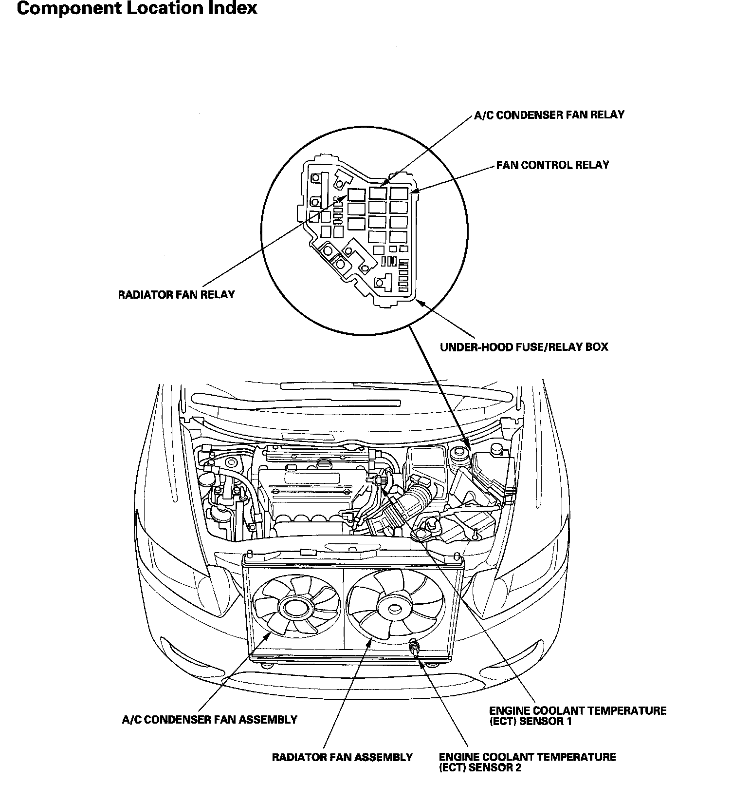

Operation CHARM
: Car repair manuals for everyone.
Home
>>
Honda
>>
2007
>>
Civic Si L4-2.0L
>>
Repair and Diagnosis
>>
Relays and Modules
>>
Relays and Modules - Cooling System
>>
Radiator Cooling Fan Control Module Relay
>>
Locations
Radiator Cooling Fan Control Module Relay: Locations
Component Location Index
Fan Controls Component Location Index:
